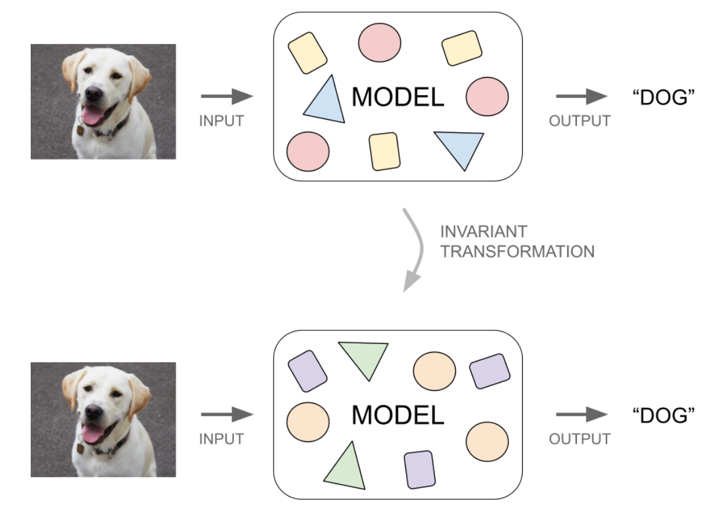
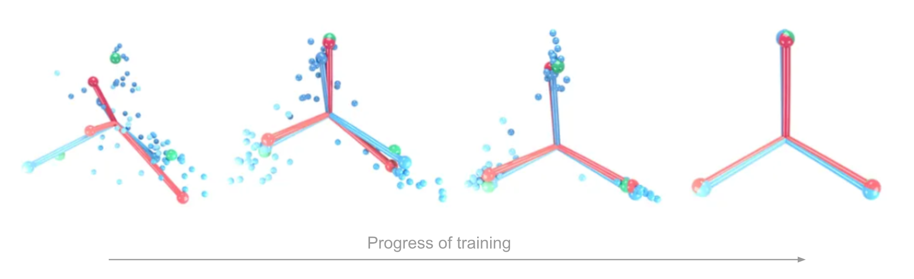
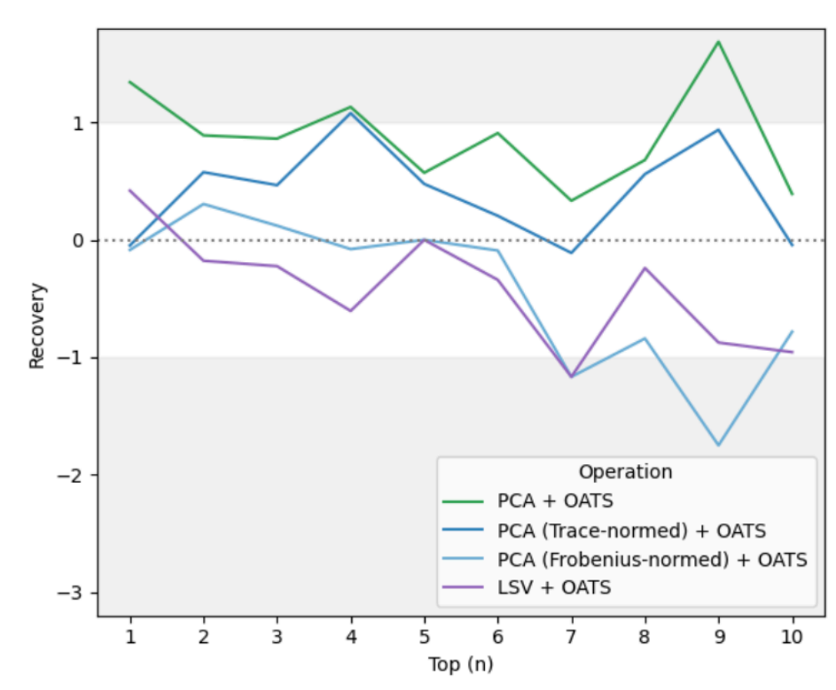

‹ Projects
Neural Collapse Pruning
Background and Motivation
For my Master’s project at UofT, I worked under the guidance of Professor Vardan Papyan and PhD student Stephen Zhang on an eight month research project to explore a method of optimizing deep learning neural networks, such as LLMs (like ChatGPT) and Vision Transformers. Specifically, we wanted to explore if we could use invariant transformations to modify the model in a way that would allow us to compress large models more efficiently.
But what are invariant transformations? Invariant transformations are mathematical operations that can be performed on a deep learning model to change its internal parameters in a way that does not affect its behaviour. In other words, if we consider a deep learning model to be a mathematical function - which takes an input, and produces an output - then an invariant transformation would create a different, but mathematically equivalent model. The new model would produce the exact same outputs as the original, given the same set of inputs.

An invariant transformation creates a new model with different internal parameters, but behaves the exact same way as the original
If we could use invariant transformations to find the sparsest representation of internal parameters, the new model would theoretically be easier to compress with existing model compression techniques.
We called our method “Neural Collapse Pruning”, because the basis for our idea would take advantage of a phenomenon that occurs in deep learning models called “Neural Collapse”. Neural Collapse describes how the mathematical representation of concepts in models tend to follow highly structured behaviour, in a way that minimizes within-class variance and maximizes between-class variance. Our approach was to align the structure formed through Neural Collapse in a way that maximizes sparsity of the internal parameters.

Over the course of training, the internal representations for concepts (represented by the floating dots) collapse into a structure known as the “Simplex ETF”. Aligning this structure to maximize sparsity of internal parameters would improve model compression. (image source)Approach and Contribution
Over the duration of the project, my tasks included the following.
- Conducting a literature review of existing model optimization methods, such as pruning, knowledge distillation, and quantization
- Developing a theoretical framework for performing transformations in Transformer-based deep learning models along scale, permutation, rotation, and translation invariances
- Developing a multi-variable optimization method to maximize the sparsity of internal matrices of transformer models through invariant transformations
- Developing the code infrastructure in PyTorch and TransformerLens to modify existing PyTorch models, sample internal embeddings during runtime, and evaluate the performance of modified models
- Conceptualizing and testing new ideas to improve the performance of our method
Results
Analysing the results of our method show that modifying a model using invariant transformations can potentially be a promising method to improve pruning efficiency. In some cases, our method had a 75% recovery over normal pruning (recovery measures how much of the accuracy loss from pruning is recovered after applying our method).
However, the performance improvement was not consistent across similar test cases, and would sometimes negatively affect performance. Because of the lack of consistency, our method, as it currently stands, is not a reliable way of improving pruning efficiency across all models. Future work could involve investigating the underlying patterns that cause some models to do worse, and refine the method to consistently improve pruning efficiency in cases where it currently negatively impacts performance.

The recovery of four variations of our method using the Top(n) metric. A recovery greater than zero represents an improvement to models compressed without using our method.